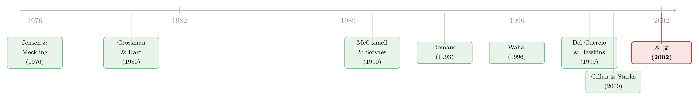

「替你盯着老板」的人，自己也是个老板
本文读的是 Woidtke (2002, Journal of Financial Economics)：把养老金分成「私营」和「公共」两类，用产业调整后的托宾 Q (industry-adjusted Tobin's Q) 与联立方程纠正内生性，作者发现——私营养老金持股越多、公司相对估值越高（正向），而公共养老金持股越多、估值反而越低（负向），且负效应主要来自那些热衷于「公开施压」、尤其盯着社会议题的基金。换句话说，「监督者」本身也是代理人，他们替你盯着老板的同时，未必和你一条心。
1 一个被默认掉的前提
公司治理的故事，通常是这样开头的：股权分散，没人有动力去监督管理层，于是搭便车 (free-rider problem) 横行——这正是 Grossman 和 Hart (1980) 的经典论断，只有足够大的股东才有动力去监督。于是人们把目光投向机构投资者：它们集体持有了最大份额的国内股权，体量够大、专业够强，理应充当那个「看门人」。Pound (1991)、Black (1992b) 都顺着这条线往下讲——让机构投资者发声，公司价值就会上去。
听起来天衣无缝。但这套逻辑里，藏着一个被悄悄默认掉的前提：机构投资者的目标，和其他股东是一致的。
只要你把这句话单独拎出来，就会觉得它其实相当可疑。Black (1992a) 那篇著名的《Agents watching agents》（代理人盯着代理人）说得很直白：机构投资者本身也是代理人，它们也有自己的一套代理冲突。本文的标题，正是从这里借来的——后面还多了一个意味深长的问号。
这就是本文要反复敲打的【一个核心】：我们请来「替我们盯着公司老板」的那个人，自己也是一个老板（一个基金的管理者）。他有自己的薪酬、自己的政治抱负、自己的选区要交代。凭什么相信他盯出来的结果，恰好是你想要的？
作者举了一个让人会心一笑的例子：纽约市退休系统的受托人兼投资顾问，是一个选举产生的职位。当两位竞选者被问及公司治理时，他们张口先谈人权、谈平等就业、谈各种社会议题——直到有人主动提起，才聊到当下许多积极主义基金真正在做的事：通过更好的治理改善公司业绩 (Star, 1993)。
一个要靠选票上位的人，去「监督」上市公司，他心里的目标函数，真的是股东价值最大化吗？
2 把「监督者」掰成两半
要回答这个问题，第一步不是去测数据，而是先想清楚：不同的机构，目标函数为什么会不一样。
这正是本文最聪明、也最朴素的一招——它没有把机构投资者当成铁板一块（这恰恰是过去研究的通病，比如 McConnell 和 Servaes (1990) 就把机构持股当成同质的一个变量），而是沿着「激励结构」这条缝，把养老金掰成了两半：私营养老金 (private pension funds) 和 公共养老金 (public pension funds)。
为什么是养老金？因为养老金是金融机构里体量最大的一群，也是股东积极主义里最活跃的主力（Karpoff, 1998 的综述）。更要紧的是，私营和公共这两类，在「治理结构」和「薪酬安排」上有着系统性的差异——而差异，正是识别的来源。
差在哪里？作者在论文第 2 节做了一张对照表（Table 1），把外部约束和薪酬激励一条一条摆出来。私营养老金受《雇员退休收入保障法》(Employee Retirement Income Security Act, ERISA) 的受托责任约束，残余索取人 (residual claimants) 是股东；公共养老金受各州法规约束，残余索取人是纳税人——而纳税人比公司股东更分散、更不可能去盯着基金管理人。更扎眼的是薪酬：
- 私营养老金管理人的平均基本工资
$101,700，公共养老金只有$75,200； - 60% 的私营养老金管理人有奖金可拿，公共养老金这一比例只有
7%； - 拿到奖金的人里，私营平均奖金
$25,600，公共只有$8,400； - 平均总薪酬：私营
$115,000，公共$76,000。
把这几个数字放在一起，结论几乎不言自明：私营养老金管理人的薪酬，更高、也更与业绩挂钩（Murphy 和 Van Nuys, 1994 也有同样的发现）；而公共养老金管理人，薪酬偏低、几乎不与基金业绩绑定，反倒要承受来自政治和社会的压力。
这就推出了两个相反方向的假说：如果私营管理人那份「更高、更挂钩业绩」的薪酬，盖过了「不要去得罪别家公司」的压力，那么他和其他股东之间会出现利益趋同 (convergence of interests)；反过来，如果公共管理人那份「偏低、不挂钩」的薪酬，挡不住政治社会压力，那么他和其他股东之间就会出现利益冲突 (conflict of interest)。这正是 Jensen 和 Meckling (1976) 框架里的那对老朋友。（关于这对概念五十年来的演变，可参见《债务这副药，为什么不能全吃？》。）
3 真正关键的一步：内生性
接着，一个自然的问题是：怎么测？
最直接的办法，是学 McConnell 和 Servaes (1990)，用普通最小二乘 (OLS) 把公司的相对估值往养老金持股上一回归，看系数符号。本文的被解释变量选得很讲究——不是裸的托宾 Q，而是 产业调整后的 Q（ADJ Q）：一家公司的 Q，减去同一个两位数 SIC 行业里所有公司的中位数 Q。
为什么要这么调整？因为作者想捕捉的，是机构与公司关系所带来的估值效应——这里头既有「公开施压」这种可观测的部分，也有私下谈判这种不可观测的部分。Carleton 等 (1998) 发现，与 CREF 进行私下谈判的公司里，超过 70% 在没走到股东投票那一步、就采纳了被要求的改变；Shivdasani (1993) 也记录了大股东持股与敌意收购概率之间的正相关。这些都说明，机构影响公司的渠道，远不止「公开点名」这一种。用 ADJ Q，就避免了那些只研究「被公开点名公司」的事件研究所面临的两个老毛病：拿不准信息何时释放、以及样本选择偏差。
但真正关键的一步在于—— ADJ Q 把私下渠道也装了进来，却也同时打开了内生性 (endogeneity) 这个潘多拉魔盒。
养老金的投资决策，本身就可能和公司的 Q 有关。这里有好几股力量在反方向拉扯：
- 业绩差、行业里 Q 偏低的公司，养老金可能更想投，因为施压能带来的好处更大；它们也可能专挑被低估的股票，等价值修复时获利。这两条都指向负相关。
- 但 Del Guercio (1996) 发现，受「审慎人法则」(prudent-man laws) 约束的机构，会把组合往大盘、低账面市值比的股票上倾斜；还有些养老金会做「橱窗粉饰」(window dressing)，在披露持仓前把低 Q 的公司甩掉 (Lakonishok et al., 1991)。这两条又指向正相关。
方向都拧巴成这样了，OLS 的系数还怎么解释？
于是作者祭出 两阶段最小二乘 (two-stage least squares, 2SLS)，把它写成一个联立方程组。第一个方程解释相对估值，第二个方程解释养老金持股：
$$ \text{ADJ Q}_{it} = a_1 + b_1' \,\text{PRIV FUND}_{it} + b_2'\,\text{PUB FUND}_{it} + f'X_{it} + b'C_{it} + g_t + e_{1it} $$
$$ \text{FUND}_{it} = a_2 + y_1\,\text{ADJ Q}_{it} + \tau Z_{it} + y C_{it} + g_t + e_{2it} $$
第二个方程的妙处，在于它把 FUND（养老金持股）显式地当成内生变量来处理：先用工具变量估出它的拟合值，再把这个拟合值塞回第一个方程，去当 FUND 的工具。这样估出来的 \(b_1\)，才能被干净地解读为「PRIV FUND 每变动一单位、对 ADJ Q 的边际效应」。
把这套设计里最核心的第一个方程，逐块拆开来看：
识别的钥匙，在于「控制变量」与「预定变量」(predetermined variables) 的划分。要让方程组可识别，每个方程都至少需要一个不出现在另一个方程里的工具变量 (Greene, 1997)。作者用了几个：是否「上一年盈利为正」——它应该只和养老金持股有关（Del Guercio (1996) 指出机构偏爱用这类历史有形指标来证明投资「审慎」），却和 ADJ Q 无关（因为一个二元指标抓不住未来现金流的水平，盈利的成熟公司和亏损的困境公司都可能有低 Q）；以及交易成本、投资可接受度 (investment acceptability)、指数吸引力 (index appeal) 等。
4 反转：负号从哪里来
数据是 1989–1993 年的财富 500 强公司，养老金和机构持股来自 Vicker's Stock Traders Guide，内部人持股来自 Compact Disclosure，其余财务数据来自 Compustat 与 CRSP，最终样本约 359 家公司的混合面板。
结果来了，而且正如预期地分裂成两半：
ADJ Q 与私营养老金持股正相关，与公共养老金持股负相关。
正号那一半，印证了「利益趋同」：私营养老金管理人那份更高、更挂钩业绩的薪酬，让他和其他股东站到了一起。
负号那一半，才是这篇论文真正的反转。于是反转出现了： 公共养老金的负效应，并非来自所有公共养老金，而是被那一小撮会公开施压、会提交股东提案的基金驱动的——尤其是那些盯着社会议题或「治理不善」议题的。这与本文一以贯之的论点严丝合缝：这些管理人的行动，更多被政治或社会压力牵引，而非公司业绩，于是和其他股东产生了利益冲突。
这个结论之所以重要，是因为它和过去那一大批「测量公开施压效应」的研究唱了反调。Wahal (1996) 发现公开点名几乎不带来股东财富的变化；Gillan 和 Starks (2000)、Karpoff 等 (1996) 也得到类似的「无显著」结果。本文说：那不是因为机构监督没有效应，而是因为——（1）过去把机构当同质处理，把方向相反的两半搅在了一起；（2）只测公开施压这一个侧面，漏掉了私下谈判那一大块。一旦把可观测与不可观测的两面都纳进来、再按管理人目标函数分类，监督的估值效应就显形了，而且方向因人而异。
5 文献脉络
把这条线捋一捋，会发现它是一条「先立后破」的演进。
最初的地基，是 Jensen 和 Meckling (1976) 的代理理论，和 Grossman 与 Hart (1980) 关于大股东监督与搭便车的论断——它们共同立起了「大股东应当监督」这根柱子。接着，McConnell 和 Servaes (1990) 用 OLS 把机构持股与公司价值挂上钩，但把机构当成了同质的一团。
然后，一批事件研究涌入「公开施压」这个口子：Smith (1996) 报告 CalPERS 谈成和解的公司有 1.05% 的正向市场反应，Strickland 等 (1996) 报告与 USA 达成协议的 53 家公司有 0.9% 的正反应；但 Wahal (1996)、Karpoff 等 (1996)、Del Guercio 和 Hawkins (1999)、Gillan 和 Starks (2000) 却普遍发现「无显著财富变化」。证据一片混乱。
与此并行，Romano (1993) 从制度与政治的角度，列举了公共养老金面对的种种政治压力——这给本文「公共 vs 私营」的切分提供了思想弹药。
本文所处的位置， 正是站在这一堆混乱证据之上，提出一个调和的解释：混乱，是因为大家既把机构同质化了、又只盯着公开施压这一个侧面。换一把尺子（按激励结构分类 + 用 ADJ Q 装下私下渠道 + 2SLS 纠内生），符号就清晰地分了开。

（沿着「从机构的选择反推它们的目标函数」这条思路，近年还有更结构化的做法，可参见《从「他们投了多少」反推「他们心里的折现率」》；而关于机构「用脚投票」如何影响治理，可参见《用脚投票：被炒掉的 CEO 背后，是谁先悄悄离场》。）
6 评论与延伸（Q&A + 研究方向）
(a) 几个可能的疑问
Q：「公共养老金持股 → 低 Q」，会不会只是因为它们专挑烂公司，而不是它们把公司搞烂了？
这正是作者最担心、也最花力气处理的问题。如果只看 OLS，这个反向因果（烂公司吸引来积极主义基金）会把系数污染得无法解读。2SLS 的整个意义就在于此：用「上一年是否盈利」「交易成本」等只影响持股、不直接影响 ADJ Q 的工具，把持股里「外生」的那部分剥出来。当然，这套识别成不成立，全押在工具的排他性 (exclusion restriction) 上——这也是我下面要说的主要担忧。
Q：私营养老金的正效应，是「监督创造了价值」，还是「私营基金更会选股」？
严格说，本文识别的是「持股对相对估值的边际效应」，并不能百分百排除选股能力这条解释。作者的论证主要是间接的：私营管理人薪酬更挂钩业绩，因此动机上更接近其他股东。但「更会选股」和「更会监督」在数据上很难干净地分开——这是这类截面估值研究的共同软肋。
Q：为什么不直接用事件研究，去看公开点名当天的股价反应？
因为那恰恰是作者要绕开的老路。事件研究只能抓住「公开施压」这一个可观测侧面，会漏掉私下谈判（Carleton et al., 1998 显示这部分占比极大），还会引入「只研究被点名公司」的样本选择偏差，并且拿不准信息究竟何时释放。用 ADJ Q 这个存量指标，是想把所有渠道的预期效应一次性装进价格里。
Q：把养老金二分为「私营 / 公共」，是不是太粗了？
作者自己也承认边界是模糊的。比如 CREF 虽然不是公司养老金，却是缴费确定型 (defined contribution)、要和其他资管竞争资金、没有显性的州代表，因此它的目标函数被认为更接近私营。真正干净的切分，或许应该落在「薪酬是否挂钩业绩」「残余索取人是谁」这些底层维度上，而不是「私营 / 公共」这个标签本身。
Q：这是不是在说「股东积极主义有害」？
不完全是。本文的精确表述是：其他股东不必然从机构与公司的关系中获益，当替你盯着老板的那个代理人和你有利益冲突时，你甚至可能受损。 它针对的是「目标函数被政治/社会压力主导」的那一类施压，而不是所有积极主义。负效应集中在社会议题与「治理不善」议题的提案上，这个细节很重要。
Q：1989–1993 的财富 500 强，结论还适用于今天吗？
要小心外推。今天公共养老金（如 CalPERS）的治理专业化程度、ESG 的制度地位，都和 90 年代初大不一样；当年被作者归为「政治/社会议题」的诉求，有些今天已被主流接受。这恰恰使本文成为一个绝佳的历史基准——见下面的研究方向。
(b) 几个可能的研究问题与提案
1. 把这套「按激励结构分类」的尺子，搬到公司债市场。 - 【经济故事】股票投资者要的是估值，债权人要的是不违约；当持有同一家公司债券的，是私营 vs 公共养老金时，它们对「老板冒险」的容忍度可能完全相反。机构债权人也是「盯着老板的代理人」，但它们的目标函数偏向下行保护。 - 【可行性】中。需要 eMAXX / NAIC 的机构债券持仓数据，被解释变量可换成信用利差或评级变动。识别上仍要面对持仓内生性，可沿用本文的工具变量思路（如机构层面的监管约束）。
2. 重做这篇论文，但把样本拉到 2000–2020，看负号是否翻转。 - 【经济故事】如果公共养老金的负效应来自「政治/社会议题主导」，那么随着 ESG 议题逐渐被市场接受、被定价，这个负号理应衰减甚至反转。这等于用时间序列检验本文的机制。 - 【可行性】高。13F、ISS Voting Analytics 的提案数据、Tobin's Q 都易得；可把样本切成若干时段，看 PUB FUND 的系数如何随时间演变，是直接而 doable 的扩展。
3. 用外资养老金（主权财富基金、海外公共养老金）做一个「目标函数更外生」的子样本。 - 【经济故事】海外公共养老金面对的是本国选民的政治压力，与被投美国公司的本地社会议题大体正交——这可能提供一个比国内公共养老金「更干净」的目标函数变异源。 - 【可行性】中。需要识别外资养老金持仓（FactSet/13F 难完整覆盖），且要论证「外国政治压力对美国公司估值外生」这一排他性，识别上有挑战但思路新颖。
4. 直接测量薪酬挂钩度，替代「私营 / 公共」这个粗标签。 - 【经济故事】本文的机制核心其实是「管理人薪酬是否挂钩业绩」，而非标签本身。若能拿到基金管理人层面的薪酬-业绩敏感度，就能把机制变量直接放进回归，检验是不是真的「越挂钩、监督越对齐」。 - 【可行性】低到中。基金管理人薪酬数据极难获取（本文也只能用 Greenwich Associates 的行业均值），但若能拿到，将是对本文机制最有力的直接检验。
7 我的判断
这篇论文最漂亮的地方，不在计量，而在问题的提法——它把「机构投资者是好监督者」这个被广泛默认的命题，拆回到「监督者自己也是代理人」的第一性原理，再用一个可观测的制度切口（私营 vs 公共的薪酬与治理差异）把它操作化。结论的方向性（正/负分裂）也讲了一个内部自洽的故事。在 2002 年，这是对「把机构同质化」和「只测公开施压」两种主流做法的一记有力反击。
但要诚实地说，它的识别承载了很重的担子。 整套结论都押在 2SLS 工具变量的排他性上：「上一年盈利为正」真的只影响持股、完全不影响 ADJ Q 吗？这是一个很强、且基本无法直接检验的假设——盈利状态与无形资产、未来现金流之间的纠葛，很难说被一个二元指标干净地切断。截面估值回归里的遗漏变量问题（比如 Himmelberg、Hubbard 和 Palia (1999) 对内部人持股内生性的批评），同样可能潜伏在养老金持股里。换句话说，符号清晰，但因果的成色仍取决于工具的可信度。
我接下来最想看到的，是用更外生的冲击来复现这个分裂的符号：比如某次改变公共养老金治理结构或薪酬上限的州立法、某次让特定机构被动地被纳入/剔除某只股票的指数重构。如果在这些更干净的设定下，「公共养老金 → 低估值」依然成立，那本文这个二十多年前的洞见，就真的站住了脚。
参考文献
- Black, B.S. (1992a). Agents watching agents: the promise for institutional investor voice. UCLA Law Review 39, 811–895.
- Black, B.S. (1992b). Institutional investors and corporate governance: the case for institutional voice. Journal of Applied Corporate Finance 5, 19–32.
- Carleton, W.T., Nelson, J.M., Weisbach, M. (1998). The influence of institutions on corporate governance through private negotiations: evidence from TIAA-CREF. Journal of Finance 53, 1335–1362.
- Del Guercio, D. (1996). The distorting effect of the prudent-man laws on institutional equity investments. Journal of Financial Economics 40, 31–62.
- Del Guercio, D., Hawkins, J. (1999). The motivation and impact of pension fund activism. Journal of Financial Economics 52, 293–340.
- Gillan, S.L., Starks, L.T. (2000). Corporate governance proposals and shareholder activism: the role of institutional investors. Journal of Financial Economics 57, 275–305.
- Grossman, S., Hart, O. (1980). Takeover bids, the free rider problem, and the theory of the corporation. Bell Journal of Economics 11, 42–64.
- Himmelberg, C.P., Hubbard, R.G., Palia, D. (1999). Understanding the determinants of managerial ownership and the link between ownership and performance. Journal of Financial Economics 53, 353–384.
- Jensen, M.C., Meckling, W. (1976). Theory of the firm: managerial behavior, agency costs, and ownership structure. Journal of Financial Economics 3, 305–360.
- Karpoff, J.M., Malatesta, P.H., Walkling, R.A. (1996). Corporate governance and shareholder initiatives: empirical evidence. Journal of Financial Economics 42, 365–396.
- McConnell, J.J., Servaes, H. (1990). Additional evidence on equity ownership and corporate value. Journal of Financial Economics 27, 595–612.
- Murphy, K.J., Van Nuys, K. (1994). State pension funds and shareholder inactivism. Working paper, Harvard Business School and Stanford University.
- Romano, R. (1993). Public pension fund activism in corporate governance reconsidered. Columbia Law Review 93, 794–853.
- Shivdasani, A. (1993). Board composition, ownership structure, and hostile takeovers. Journal of Accounting and Economics 16, 167–198.
- Smith, M.P. (1996). Shareholder activism by institutional investors: evidence from CalPERS. Journal of Finance 51, 227–252.
- Strickland, D., Wiles, K.W., Zenner, M. (1996). A requiem for the USA: is small shareholder monitoring effective? Journal of Financial Economics 40, 319–338.
- Wahal, S. (1996). Public pension fund activism and firm performance. Journal of Financial and Quantitative Analysis 31, 1–23.
- Woidtke, T. (2002). Agents watching agents?: evidence from pension fund ownership and firm value. Journal of Financial Economics 63, 99–131.